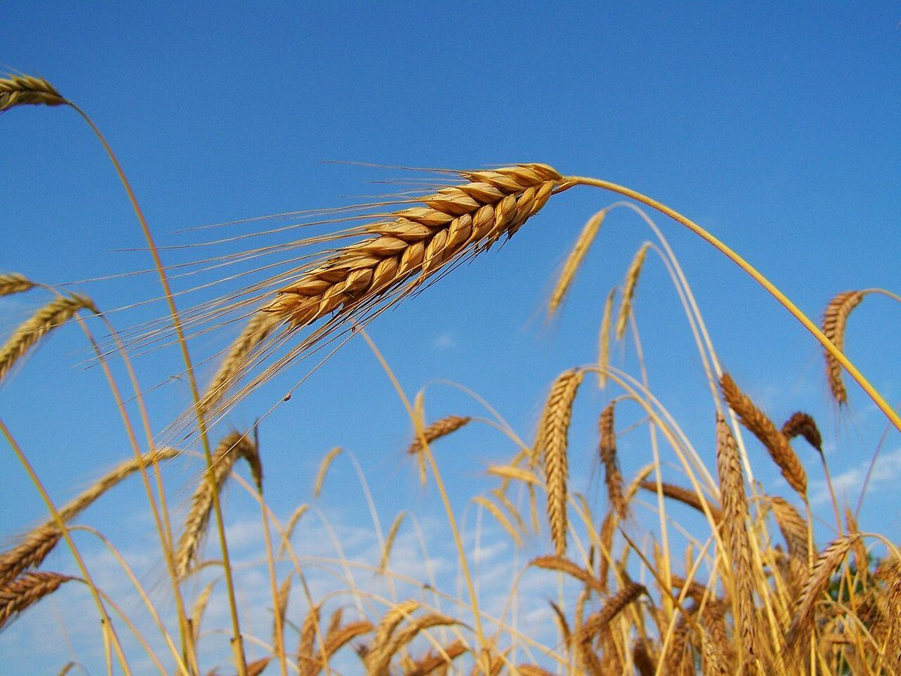

四のばし
こんな声があるかもしれない
パン屋という業種から自然に想像できる声を、制作側が創作したものです。
以下は制作側が考えた創作のイメージ例で、実在のお客様の投稿ではありません。実際の口コミ・評価とは関係ありません。
いつかInstagramをのぞいてみたいです。どんなパンの写真が載っているのか、想像するだけで楽しみです。
パン屋さんの投稿を見るのが好きなので、「焼きたてパン コロール」のアカウントも気になっています。
いつか桐生市に出かける機会があれば、このお店のことを調べてみたいと思います。
